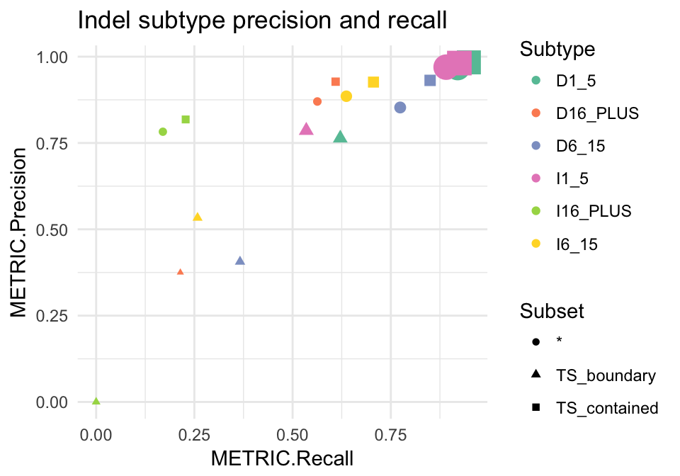
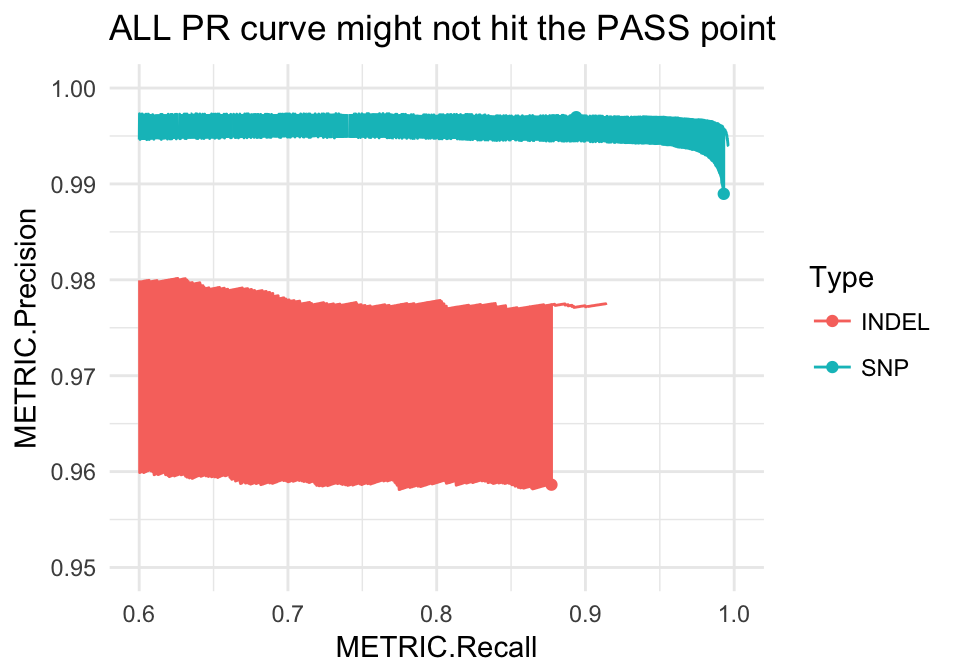
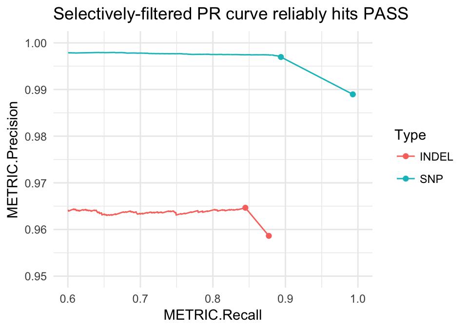

Load hap.py results into an R data structure to enable simple plotting, comparisons and aggregation. The related package happyCompare builds on happyR with statistical analysis of groups and replicates, as well as providing some more sophisticated plotting and reporting functionality.
Usage
library(happyR)
# demo data that comes with the package
happy_input <- system.file("extdata", "happy_demo.summary.csv", package = "happyR")
happy_prefix <- sub(".summary.csv", "", happy_input)
# happy_prefix is the -o argument to hap.py, here: path/to/files/happy_demo
hapdata <- read_happy(happy_prefix)
#> Reading summary table
#> Reading extended table
#> Reading precision-recall curve data
hapdata
#> Hap.py result containing: summary, extended, pr_curve
#> Loaded from: /Users/bmoore1/Rlibs/happyR/extdata/happy_demo (hap.py version: v0.3.9)
#>
#> # A tibble: 4 x 17
#> Type Filter TRUTH.TOTAL TRUTH.TP TRUTH.FN QUERY.TOTAL QUERY.FP
#> <chr> <chr> <int> <int> <int> <int> <int>
#> 1 INDEL ALL 8937 7839 1098 11812 343
#> 2 INDEL PASS 8937 7550 1387 9971 283
#> 3 SNP ALL 52494 52125 369 90092 582
#> 4 SNP PASS 52494 46920 5574 48078 143
#> # ... with 10 more variables: QUERY.UNK <int>, FP.gt <int>,
#> # METRIC.Recall <dbl>, METRIC.Precision <dbl>, METRIC.Frac_NA <dbl>,
#> # METRIC.F1_Score <dbl>, TRUTH.TOTAL.TiTv_ratio <dbl>,
#> # QUERY.TOTAL.TiTv_ratio <dbl>, TRUTH.TOTAL.het_hom_ratio <dbl>,
#> # QUERY.TOTAL.het_hom_ratio <dbl>hapdata is now a single hap.py data object containing:
-
summary(from summary.csv) - high-level ALL / PASS numbers -
extended(from extended.csv) - region / subtype stratified metrics -
pr_curve(from roc.*.csv.gz) - precision-recall over quality score
names(hapdata)
#> [1] "summary" "extended" "pr_curve"
# e.g. here pr_curve$INDEL_PASS maps to happy_demo.roc.Locations.INDEL.PASS.csv.gz
names(hapdata$pr_curve)
#> [1] "INDEL_SEL" "INDEL_PASS" "SNP" "all" "INDEL"
#> [6] "SNP_PASS" "SNP_SEL"Example plots
Indel subtypes
Here subtypes are categories based on the variant type and length (e.g. I6_15 are insertions of length 6 bp up to 15 bp). Genomic subsets are * for all, TS_contained for truth variants fully-contained with confident regions and TS_boundary for truth variants near the edge of a confident region block. See hap.py docs for more info.
library(ggplot2)
# get indel subtypes from 'extended', skipping complex alleles and combined
indel_extended <- subset(hapdata$extended, Type == "INDEL" &
Filter == "ALL" & grepl("^[DI]", Subtype))
# Precision-recall by subtype, scaled by number in truthset
ggplot(indel_extended, aes(x = METRIC.Recall, y = METRIC.Precision,
col = Subtype, size = TRUTH.TOTAL, shape=Subset)) +
geom_point() + theme_minimal() +
scale_color_brewer(palette = "Set2") +
scale_size(guide = "none") +
ggtitle("Indel subtype precision and recall")
Precision-recall curves
PR curves show how precision and recall vary with a changing threshold, in this example it’s over a range of quality score thresholds applied to a set of variants: as the threshold increases, the remaining variant set is less comprehensive (lower recall) but typically contains fewer false positives (higher precision).
This gets more complicated when PASS records aren’t set solely by a single quality score threshold, but by multiple independent filters (e.g. high-depth, genomic context, etc.). These interactions can’t be fully captured by drawing a PR curve only on a quality threshold:
# using happyR::pr_data to simplify subsetting:
all_pr <- pr_data(hapdata)
# this gets PR curve starting at ALL point, equivalent to base:
# all_pr <- subset(hapdata$pr_curve$all, Filter == "ALL" & Subtype == "*" & Subset == "*")
ggplot(all_pr, aes(x = METRIC.Recall, y = METRIC.Precision, col = Type)) +
geom_line() + theme_minimal() +
geom_point(data = hapdata$summary) +
scale_x_continuous(limits = c(.6, 1)) +
scale_y_continuous(limits = c(.95, 1)) +
ggtitle("ALL PR curve might not hit the PASS point")
Hap.py accounts for this by generating a selectively-filtered PR curve (SEL). First these independent filters are applied to the variant set, then we can draw the remaining PR curve using the quality score threshold. This gives a more accurate view of how changing the quality score threshold can impact precision and recall.
# selectively filtered PR curve
pr <- pr_data(hapdata, filter = "SEL")
# link this to the ALL point
pr <- dplyr::bind_rows(pr, subset(hapdata$summary, Filter == "ALL"))
ggplot(pr, aes(x = METRIC.Recall, y = METRIC.Precision, col = Type)) +
geom_line() + theme_minimal() +
geom_point(data = hapdata$summary) +
scale_x_continuous(limits = c(.6, 1)) +
scale_y_continuous(limits = c(.95, 1)) +
ggtitle("Selectively-filtered PR curve reliably hits PASS")
System requirements
Originally developed for R v3.4.0. Tests are run using the most recent available R versions (incl. devel) on Ubuntu (Trusty) and OS X (El Capitan) platforms. HappyR has not been tested on Windows. Dependencies are listed in DESCRIPTION.